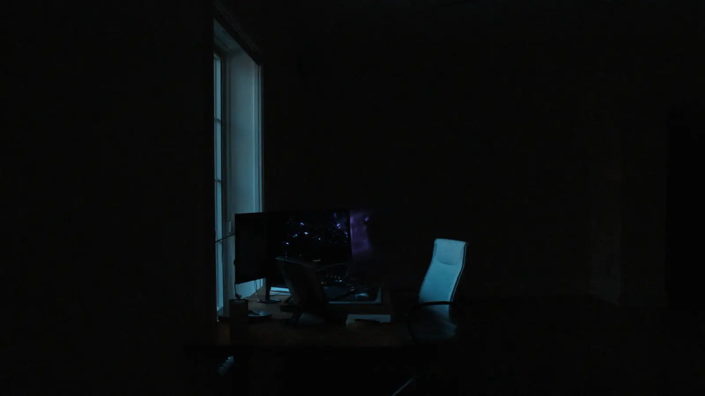

Most of my work sits where a product has to be correct as well as clever.
I'm a full-stack engineer with a specialism in AI integration — multi-tenant data isolation,
encrypted document handling, audit trails, and language models wired to real inventory
rather than to their own imagination.
I've also run first-line incident management in a 24/7 telecom Network Operations Centre, which is
where I learned that shipping is the easy half. That shows up in how I build: logging you can
actually read at 3am, failure paths that degrade rather than disappear, and a written trail behind
every change.
As Founder of Orbixio Ltd I deliver full-stack and AI work to small and
medium-sized businesses — end-to-end automation, Claude API integrations, and Model Context
Protocol tool layers that connect models to systems that already exist.
First-line support and incident management in a 24/7 telecom Network Operations Centre,
resolving service-affecting events to ITIL standards.
Managed incidents, service requests and escalations across ServiceNow, Salesforce, Jira and
PagerDuty, maintaining SLA adherence.
Designed a structured NOC daily logging system, improving shift-handover continuity and
incident traceability.
Found and fixed a duplicate-case defect during the Salesforce Field Service
migration that was blocking engineers from resolving tickets — raised it formally, had
it confirmed, and wrote the technical analysis that went to the Operations and Performance
Managers.
Founded and run a UK AI automation company delivering full-stack and AI solutions to small
and medium-sized businesses.
Design and build client-facing applications with React, TypeScript, Node.js and PostgreSQL,
integrating the Claude API for AI-driven features.
Engineer RAG pipelines and Model Context Protocol servers to connect large language models
with external data sources and tools.
Build end-to-end automation workflows across multiple third-party APIs, owning delivery from
scoping to handover.
2024
IT Analyst
Saif Social and Health Care Homes Ltd Aug 2024 — Oct 2025
Ran requirements-gathering sessions with operational stakeholders across onboarding,
access management and compliance workflows, translating pain points into documented
business and functional requirements.
Mapped As-Is processes and designed a To-Be staff onboarding workflow (Microsoft Forms,
SharePoint, Intune) that cut onboarding time from a full day to under two hours
with 100% day-one readiness for new starters.
Performed gap analysis on the organisation's access-governance model and documented
requirements for a role-based access control (RBAC) framework, subsequently
implemented across 100+ users to reduce data-exposure risk.
Produced systems documentation, data-flow diagrams and user guides for technical and
non-technical audiences, supporting adoption and long-term maintainability of new
workflows.
Interlude
Where the work gets made.
Most of what follows was built at this desk, at hours that do not appear on a timesheet.

01 — Before
02 — In flow
03 — The detail
Generated environment stills — atmosphere, not photographs
A multi-tenant compliance platform for UK supported housing and social care —
residents, properties, incidents, encrypted documents and CQC compliance inside isolated
per-organisation workspaces. In demonstration discussions; no paying users.
One plain-English sentence becomes a costed itinerary. A Claude tool-calling
agent searches live flights, stays and hire cars through the Duffel API plus Tourista's own
tours, and streams the trip back as it works. The Duffel tool layer is written once and consumed
twice — by the web backend and by a standalone MCP server.
A platform with no interface of its own — Claude Desktop is the client. Six MCP
tools over stdio, zod-validated structured output, and an approval gate enforced at protocol
level rather than by convention. Nothing moves downstream until a human approves it.
Secure tour booking web application, final-year honours project, taken through university
research ethics approval. Originally also named Tourista — unrelated to the Orbixio platform.
Glasgow Caledonian University, 2024.
Upload a payslip, P60 or a screenshot of HMRC's payments page and get income tax and National
Insurance across five tax years. Claude reads the documents; the arithmetic is deterministic
TypeScript against an official rates table.
RAG Document Assistant
Document-querying assistant using LangChain, ChromaDB and HuggingFace embeddings for grounded
question answering over private documents.
Personal finance CLI — bank statement ingestion, AI transaction categorisation and UK tax
calculations behind a conversational interface.
04 — Design
I design it before I build it.
Interfaces don't survive a compliance audit unless someone thought about them first.
This site's design system
The page you are reading is the demonstration. One accent doing accent work, two loaded
families, a fixed set of spacing primitives, and tracking that tightens as type grows — declared
once as tokens and consumed everywhere rather than decided per component.
Every colour pair is measured rather than eyeballed, and no state on this site is carried by
colour alone: the active nav item is violet and underlined, for that reason.
A written specification that precedes the code: a Material Design 3–derived approach chosen for
data-dense enterprise screens, with a documented light and dark palette in HSL, a nine-step type
scale, spacing primitives and patterns for tables, modals and multi-step forms.
Shipped — AccomPro
Tourista motion library
A shared motion module defining easings and variants, plus nine reusable animated components, so
every page inherits the same behaviour instead of reinventing it. All of it respects
prefers-reduced-motion.
Shipped — Tourista
Onboarding wizard pattern
An eleven-step resident onboarding flow documented as a reusable interaction pattern — autosave,
per-step validation, resumable progress and error recovery — written up so the next long form
inherits it rather than being redesigned.
Shipped — AccomPro
05 — Capabilities
The tools of the craft.
No percentages. Everything here appears in a project on this page.
Full Stack
TypeScript & JavaScript01
Python02
React & Next.js03
Node.js & Express04
PostgreSQL & Prisma05
MongoDB06
AI
Anthropic Claude API01
Model Context Protocol02
Agentic tool-use & RAG03
LangChain & ChromaDB04
Cloud & DevOps
Docker & Kubernetes01
Terraform & AWS02
AES-256-GCM & RBAC03
Service Management
ITIL service management01
ServiceNow & Salesforce02
Jira & PagerDuty03
CTC — Counter Terrorist Check
UK Government · Cleared 2024
Model Context Protocol
Anthropic · Dec 2025
Atlassian Forge Developer
Atlassian · Jan 2026
ITOL Certified
ITOL
Introduction to DevOps
Microsoft · Nov 2025
Plan Agile with GitHub Projects
Microsoft · Nov 2025
Google Generative AI
Google · 2025
AWS Cloud Fundamentals
Amazon Web Services · Apr 2024
06 — Contact
Let's build something that lasts.
I'm open to Solutions Architect and Forward Deployed Engineer roles in the UK, and to
Orbixio work for small and medium-sized businesses. Email is the fastest way to reach me.